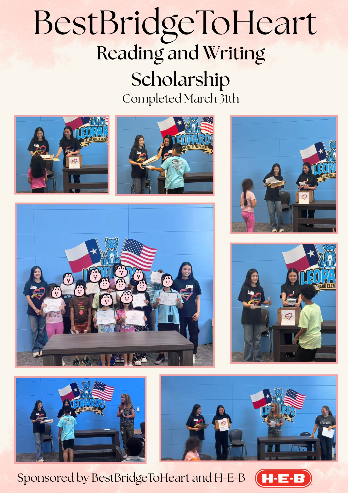
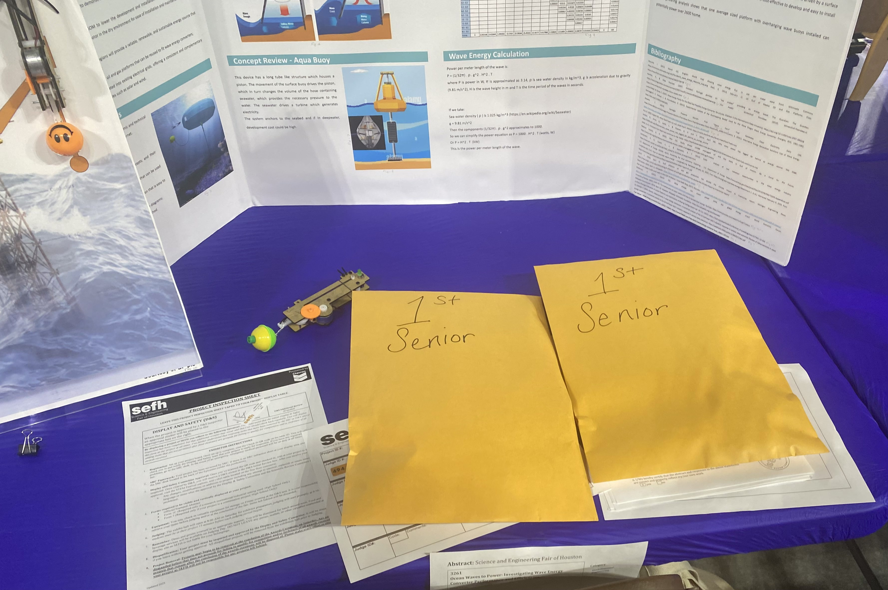
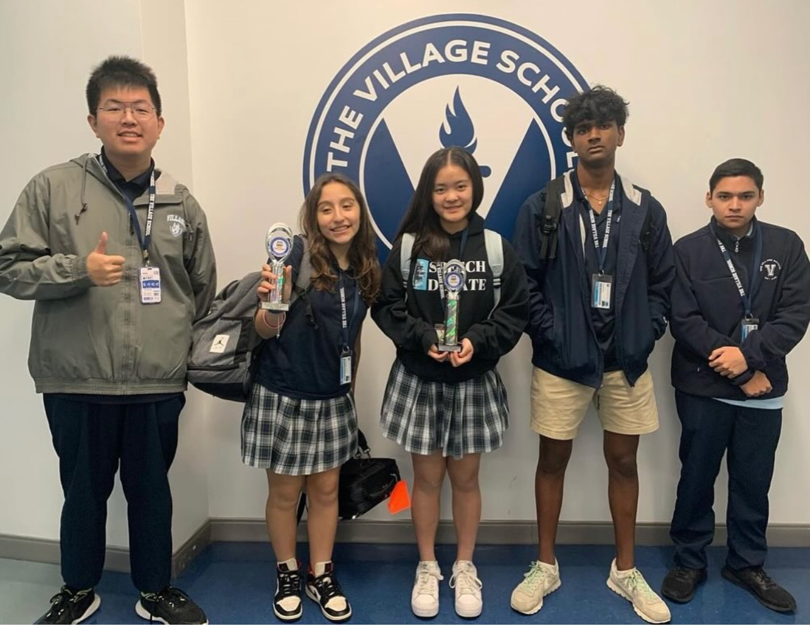

- Oversee four committees for student-run clubs that promote logical thinking, public speaking, and civic discourse: Model UN, Civic Leaders of American, TEDx Talks, and Speech and Debate competitions.
- Actively raising funds to send students to Speech and Debate and Model U.N. competitions
- Established a new Speech and Debate team for students
- Hosted a Model United Nations conference for schools around Texas
- Created website for TAMS MUN 2026 Conference — visit site
- Website: visit site
- Established mini-library for children in underserved apartment communities, and designed reading award system to encourage children to read
- Expanded non-profit from Houston, TX to Denton, TX
- Host book drives for underserved school districts in Houston metropolitan area
- Taught STEM classes to elementary students
- Hosted scholarship program for 2 years, giving out scholarships to around 40 students

- Prepared four teams of multiple people for Houston Science and Engineering Fair
- Won Special Award (1st Place Geophysical Society of Houston)
- Prepared students for the TEAMS (Tests of Engineering Aptitude, Mathematics, & Science) Competition
- Competed in TEAMS competition as Team Founder & Leader and won 8th place, Overall, State of Texas for the TEAMS competition
- Increased awards by 267% from the previous year for the Houston Science and Engineering Fair
- Led 31 students to participate in the STEM Research Competition Club in our first year

- Girls’ Singles Regionals #3 and State qualifier (Girls’ Singles Top 16 in State)
- Girls’ Singles Regionals #4
- Awarded MVP (Most Valuable Player)
- Kingwood Mustang TFA NIETOC Debate PF Varsity #3
- Cypress Freeze TFA NIETOC Debate PF Novice #1
- Mentored younger students and mock debated with them
- Competed in First Tech Challenge Regional Robotics Competition (FIRST)
- Won 1st place in regionals and Placed 24th place in the State (FIRST)
Think Award Winner, Design Finalist, Control & Innovate Finalist, First Pick in Winning Alliance (FIRST)
- Helped build the robot arm and gripper, helped code the autonomous (FIRST)
- Conducted game analysis to optimize maximum amount of points scored (FIRST and FRC)
- State qualifier for First Robotics Competition (FRC)
- Emailed companies for sponsorships and created outreach (FRC)

- Taught young students Mathematics and English
- Graded papers and corrected exams
- Managed recording logs